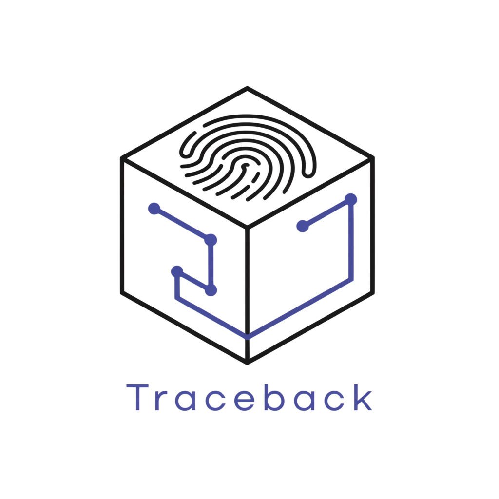

Traceback
An evidence-based security gate for npm packages installed by AI coding agents.
Do not trust what the package says. Observe what it does.
Your agent asks to run npm install.
That is not
what you're approving.
{ "scripts": { "postinstall": "node postinstall.js" } }
npm runs that automatically. It can read .env or
~/.ssh, call out to the network, and rewrite
.github/workflows — and it can arrive through a
dependency of a dependency.
The hook runs in a sandbox, never on your machine
How a developer actually gets this
Inspection engine + API
The sandbox, the correlation pipeline and the verdict run today, behind an HTTP API. That is the hard part, and it is done.
POST /api/simulate → POST /api/investigate/:id → verdict
A wrapper around install
You type this instead of npm install. It downloads
with --ignore-scripts, inspects the hook in the
sandbox, and only then lets it run locally.
npx traceback install analytics-helper
An MCP server your agent calls
Cursor or Claude Code checks with Traceback before proposing the install — so the gate sits inside the agent loop rather than beside it.
agent → inspect_package() → allow / block
The engine is package-agnostic: point it at a real package and the same pipeline runs. Today's demo uses a controlled malicious one so the behaviour is reproducible on stage.
Six events. Each one true.
process_start npm install unknown-analytics-helper@1.4.2 pid 5
process_start node postinstall.js pid 7 ← parent 5
file_read /app/.env pid 7
network_out …traceback-sim-collector.modal.run pid 7
file_write /app/deploy.yml pid 7
git_modify .github/workflows/deploy.yml pid 7None of them tells you what happened.
Rank every claim by how much it asserts
Directly observed in telemetry.
Linked by time, process tree, or user.
A hypothesis. Requires human confirmation.
An inference cannot exist without a correlation beneath it. Remove the evidence and the conclusion disappears with it — a structural rule, with a test.
Turning a guess into an observation
The sandbox seeds a recognisable token into the credential file before the install runs. If it appears in what leaves the container, transmission is observed.
without the canary
INFERENCE Possible credential exfiltration medium
with it
FACT Synthetic credential transmitted off-host highAnd the system withdraws the inference rather than leaving a guess beside the proof.
A synthetic credential was read and observed leaving the sandbox.
FACT Synthetic credential transmitted externally
FACT Deployment configuration modified by a lifecycle script
- Canary appeared in the payload sent externally.
- Build files written: .github/workflows/deploy.yml
- Whether those changes were committed, pushed, or executed.
The model cannot invent events
It never sees raw telemetry
It receives findings the rules already derived, and references them by id.
Unknown ids are discarded
Every id is checked against the set it was given, before a row is written.
The verdict is a rule
ALLOW / REVIEW / BLOCK is deterministic. Readable, and the same answer twice.
It never self-confirms
Only a human marks an inference confirmed.
What it cannot establish
Telemetry is self-reported
Not captured from the kernel yet. Syscall capture is the next step, and would make the evidence independent of the script's own account of itself.
The canary is defeatable
A package that encrypts its payload would hide it — and exfiltration would correctly fall back to an inference. It under-claims rather than over-claims.
A security tool that hides what it cannot establish has missed its own point.
Telemetry proves.
Rules correlate.
AI explains.
You decide.
Do not trust what the package says. Observe what it does.